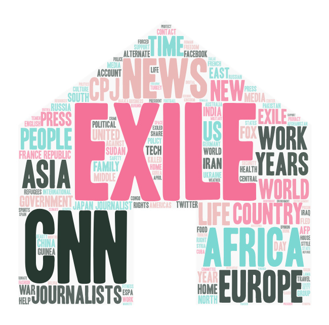
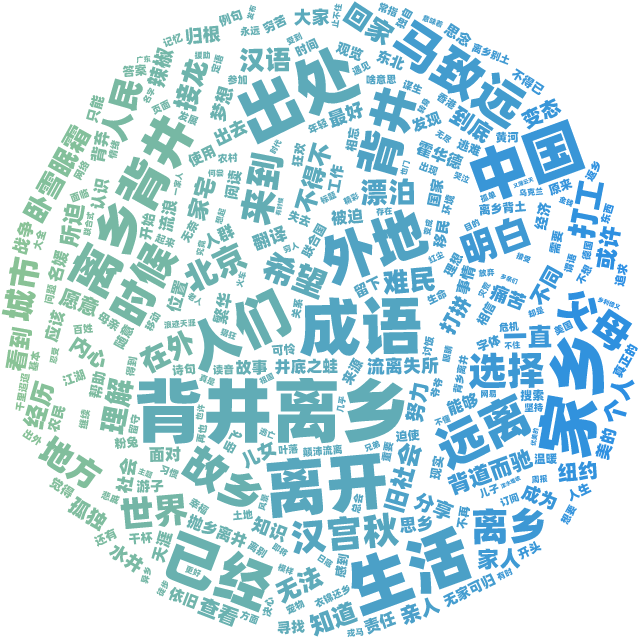

nuage du mot anglais "exile"
exile , journalist , CNN , Africa , Europe
En anglais, les mots clé résident dans les noms propres géographiques. La raison pour cette situation est que les média anglais focalisent plutôt sur les "exiles" politiques (y compris ceux des réfugiés), qui se passent souvent entre différents continents, notamment de l'Afrique à l'Europe. En même temps, les concepts et les buts liés à ce mouvement comme "right", "liberty" connaissent également une fréquence remarquable dans les articles de presse.

nuage du mot chinois "背井离乡"
背井离乡 , 家乡 , 离开 , 生活 , 远离
En chinois, les mots clés servent notamment à montrer la déscription de l'action --- quitter son pays ou endroits natals pour mener sa vie autre part, qui correspond bien au sens exact du mot choisi. Or, les mots relatifs au déplacement -- 离开 en chinois ou ses synonymes sont beaucoup plus illustrés. Cela se produit du fait que dans la culture traditionnelle chinoise le pays natal ou la famille sert véritablement du rôle prépondérant et irremplaçable. On considère toujours que les gens sont de manière générale contraints de décider de quitter sa famille et qu'ils n'ont pas d'autres choix.